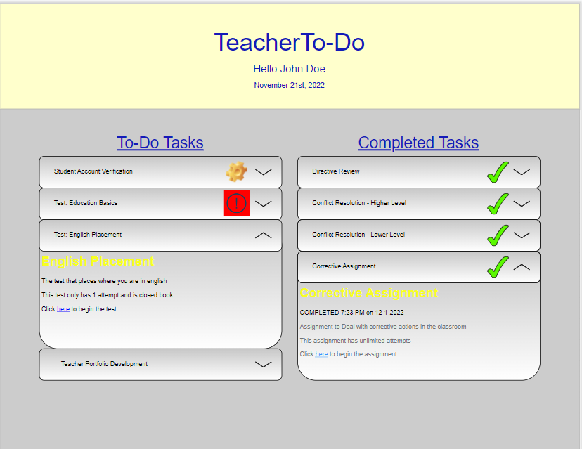
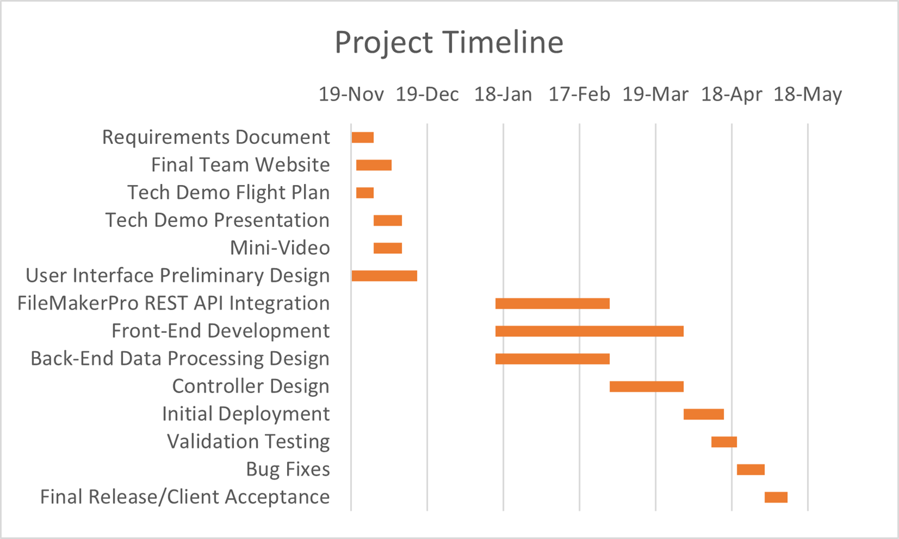

Teacher To-Do
A project devoted to helping new student teachers.
Overview
Our team is working to create a viable product to help manage a student-teacher transition process. It will reduce the amount of time it takes to get students enrolled in teaching jobs outside of college and streamline the application process for faculty.
This process is offered to 12 different degree programs, each with differing requirements that must be managed. Currently, the College of Education uses a manual process to track requirements for each individual student teacher in an Excel spreadsheet. College of Education staff spend well over 200 hours each semester on this process that could be used to provide other services to students.
Our goal is to make this process automated, so that no data will need manual input, and students can upload their own data for review by faculty members at their earliest convienence. Simultaneously, faculty will also be able to see student progress, and be able to identify exactly where they are in their current projection plan.
This project stemmed from our sponsor, Chris Aungst, in the form of this Capstone Project Proposal
Team
Our team consists of 5 members and our client:
Sam Gerstner - Team Lead
Alexander Frenette - Backend Developer
Noah Nannen - User Interface Developer
Shlok Sheth - Full Stack Developer
Chris Aungst - Director of Professional Education Program and Project Client
Requirements
Our requirements include a streamlined experiance with any students or faculty who are involved in the process, safe and efficent manangment of data, and of course maintained privacy for students who decide to pursue this course of action. We believe that we can accomplish these requirements by starting with the data manangment systems and moving up to the user interface from there, allowing all of the data to be securly transferred to and from the students or faculty that would be using this system. Creating a backend based system allows for more changes to be implemented if the requirements for certain courses need to be added, removed or altered. It would also allow for more of a streamlined experiance through differing programs having a direct connection to their backend counterparts
Ideal Solution
Our ideal solution is a web app that will act as a single source of truth for all student information. Storing school records along with auxiliary documents. This information will be pulled from existing school records APIs, and student and admin accounts and authentication will be provided through the school authentication system. This would also allow for the ability to send documents for signatures electronically rather than physically.
Non-Ideal Solution
If we do not have access to existing school infrastructure, we still have options. The system will continue to offer the same functionality, but will require additional human input. Student records will have to be imported by a college employee and site admin. It will then be parsed by the system to generate student accounts, and accompanying data.
Reguardless of how we are able to accomplish this goal, we will be using an HTML5-based front-end User Interface. The final design of this UI is not set, but below is an example of a very basic student view.

Technologies
We are using Java to code the basic backend functions, allowing us to sort and notify the correct users when data is uploaded or updated to a database. We also plan to use OpenAPI for the data modeling and API models. Lastly we are planning to use SprintBoot to generate webpages for users to be able to access or edit their data, as a kind of popup UI for the time being.
We do plan to deploy a cloud infastructure using SQL for the database and implementing an S3-like Solution as large format data storage for files, but right now we are focusing on the basics of the backend solution.
Our schedule is shown in the Gantt Chart below, and we plan to begin full scale development in eary January.

Deliverables
We upload deliverables weekly, and will be making updated changes throughout the 2022 - 2023 school year. To view our past and current deliverables, please visit our Github at github.com/TeacherTodo
If you would like to see our current demos, you may see the current iterations of the Student Landing Page and the Administrator Landing Page.